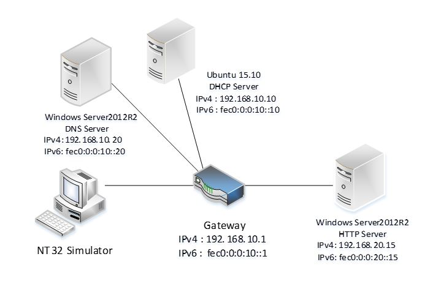

Network topology
Figure 1 shows a test-bed using HTTP boot. In this example, the DHCP server and DNS server are separately deployed on Ubuntu 15.10 and Windows Server 2012 R2. These two servers and an NT32 simulator are located on the same subnet: IPv4 (192.168.10.0) / IPv6 (fec0:0:0:10::/64).
In this example, the HTTP server is deployed in another Windows Server 2012 R2 and located on a different subnet: IPv4 (192.168.20.0) / IPv6 (fec0:0:0:20::/64). The two subnets are connected by a gateway.

Figure 1 HTTP boot test-bed
Note: You may use an alternative solution to establish your test-bed and configure your DHCP server, DNS server and HTTP Server. This chapter describes one such approach as a reference or guide.